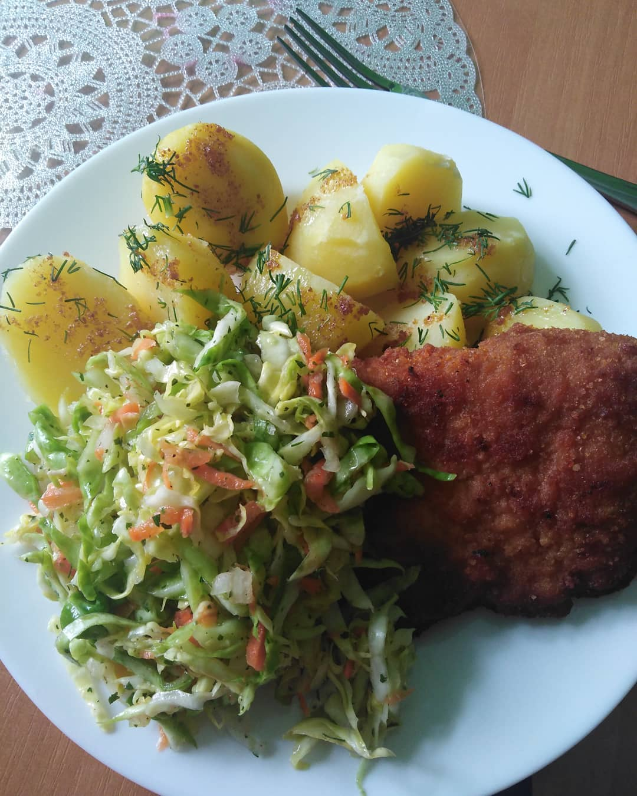

Kapusta podľa @bezglutenu2021 — Normy Jedál
Witajcie 🙋♀️
Co tam u was słychać?
Jak samopoczucie, co dobrego zjedliście???
U mnie właśnie obiadek 😀
Ziemniaczki, kotlecik i suróweczka z młodej kapusty.. 😋😋😋
#obiad#ziemniaki#kotlet#schab#bezglutenu#kapusta#młodakapusta#surówkadoobiadu#surówka#koperek